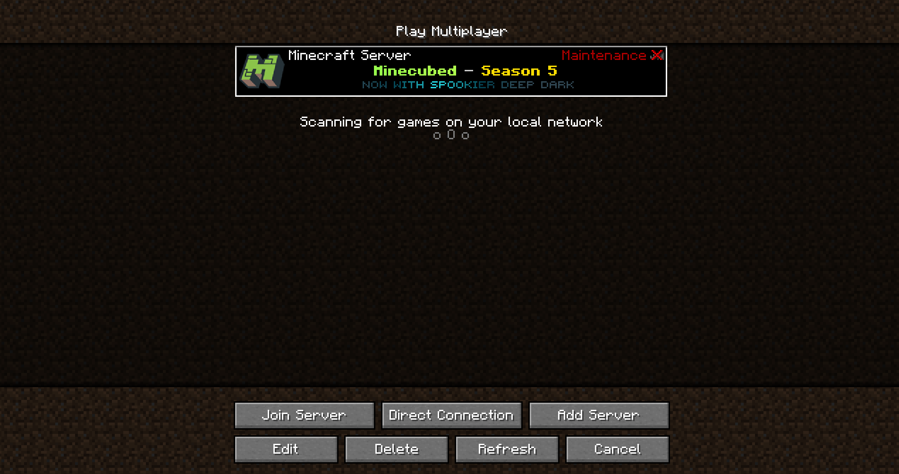
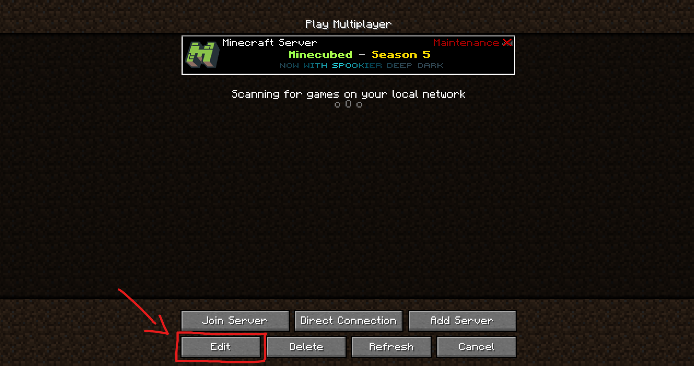
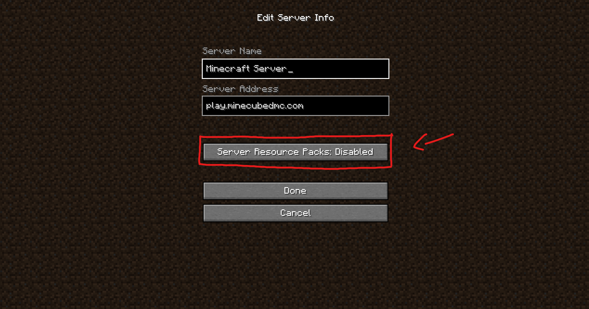
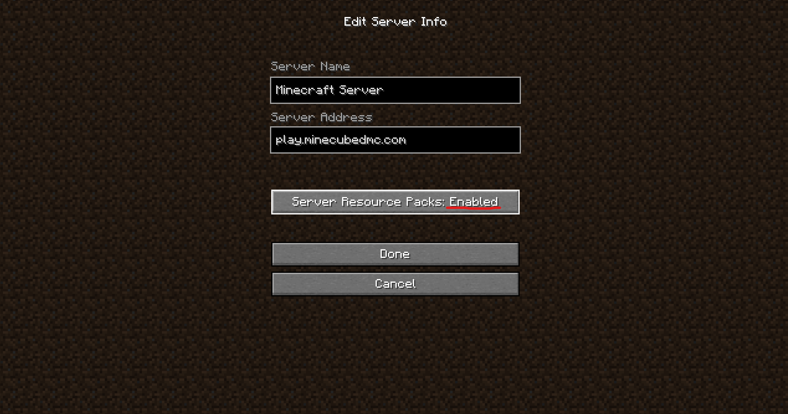
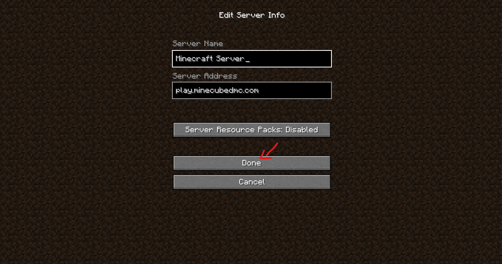

🇮🇪 In your multiplayer serverlist select the entry of the server for which you want to enable server resource packs.
🇭🇷 Na server listi odaberite server za koji želite omogućiti resource pack
🇮🇪 Click on the "Edit" button on the bottom left to open the server entry's options menu.
🇭🇷 Kliknite na "Edit" gumb na dnu lijevo da otvorite izbornik opcija servera.
🇮🇪 There you can see "Server Resource Packs" is set to "Disabled".
🇭🇷 Tu možete vidjeti da je "Server Resource Packs" postavljen na "Disabled".
🇮🇪 Set the "Server Resource Packs" option to "Enabled".
🇭🇷 Postavite "Server Resource Packs" opciju na "Enabled".
🇮🇪 Click the "Done" button and server resource packs are now enabled for that server. Now you can join!
🇭🇷 Kliknite na "Done" gumb i server resource pack je sada uključen za taj server. Sada se možete pridružiti!
